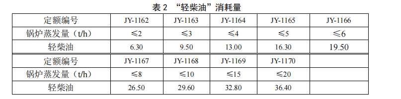

一、本章包括加工设备、起重设备、装卸油品设备、泵、分离机械、空气压缩机、柴油
发电机组、电热设备、容器、金属结构制作及安装、其他设备 11 节。
二、本章起重设备定额未包含走行轨道和设备接地内容。其中：室外走行轨轨道安装执
行《铁路工程预算定额 第十三册 站场工程》相关子目，室内走行轨轨道安装执行《铁路工
程预算定额 第十册 房屋工程》相关子目，室外设备接地执行《铁路工程预算定额 第八册 电
力工程》相关子目。
三、起重设备安装定额未包含滑触线安装内容，滑触线安装执行《铁路工程预算定额 第
八册 电力工程》相关子目。
四、工程量计算规则。
“作业平台”工程量以“10m”计算。
一、本章包括机车运用设备、机车整备设备、机车检修设备、培训设备、油罐 5 节，其
中机车检修设备分为通用检修设备、内燃机车检修设备、电力机车检修设备三个部分。
二、 “机车整备设备”节“终端式隔离开关联锁标志灯”定额未包含信号机构的安装、
电缆沟的挖填及电缆敷设相关内容，采用《铁路工程预算定额 第六册 信号工程》相关定额
子目。
三、“油罐”节编制了“制作及安装”“油罐安装”“防腐蚀”及“保温”相关子目，
其中未包含的防雷接地相关内容，采用《铁路工程预算定额 第八册 电力工程》相关定额子
目另计。
1. 拱顶油罐“制作及安装”定额子目按同时建造多座拱顶油罐编制，只建 1 座时，定
额人工、机具台班消耗量按 1.25 系数调整。
2. 采用成品油罐时，油罐安装采用“油罐”节的“安装”定额子目，成品油罐安装内
容包括附件安装，试漏，水压试验，油清洗。
3. 80m³以下卧式油罐、储气罐安装定额，采用第一章“容器”节相关子目。
四、工程量计算规则。
1. “引机车入库装置配线”不变部分工程量按设计数量以“套”计算；可调部分工程
量按设计库内各线总长度以“10m”计算。
2. “安全监控系统”工程量按设计数量以“股道”计算。
一、本章包括客货车通用设备、客车设备、货车设备 3 节。其中客车和货车检修均使用
的设备编列在“客货车通用设备”节。
二、列车制动试验设备中的轨边设备采用“列车无线遥控试风系统执行器”子目，电动
脱轨装置包含值班室电控柜及轨边设备，均按“台”计。
三、客车设备节中的客车洗刷设备定额不包括清洗线上设备基础，需与清洗线土建工程
一起执行《铁路工程预算定额 第十册 房屋工程》相关子目。
一、本章包括各探测站设备、相关车辆运行安全监控系统终端设备及系统调试的安装定
额。
二、车辆运行安全监控系统终端设备、服务器机柜、系统调试安装定额适用于铁路车辆
运行安全监控系统中各子系统的复示站、监测站、检测站、查询中心等处。
三、各类探测站设备定额子目中未包含挖填电缆沟及电缆敷设相关内容。其中属于安装
工程的电缆敷设采用《铁路工程预算定额 第五册 通信工程》相关定额。
四、相关系统探测站简称对应关系如下：
THDS---车辆轴温智能探测系统、TFDS---货车故障轨旁图像检测系统、TPDS---车辆运
行品质轨旁动态监测系统、TADS---车辆滚动轴承故障轨旁声学诊断系统、TCDS---客车运
行安全监控系统、TVDS----客车故障轨旁图像检测系统、TEDS---动车组运行故障图像检测
系统、WTDS---动车组车载信息无线传输系统、ATIS---铁路车号自动识别系统。
一、本章包括动车段设备、动车运用所（存车场）设备 2 节。其中“动车洗车设备”定额
子目未包含清洗线上设备基础，执行《铁路工程预算定额 第十册 房屋工程》相关子目。
二、工程量计算规则。
“存车场登车台”按设计数量以“10m”计算。
一、本章编制了大型养路机械检修设备、焊轨基地专用设备、站台门、电梯及自动扶梯、
输送设备、装卸机械、衡器、驼峰机械设备、锅炉、风机、破碎及筛分设备 11 节。
二、“站台门”节适用于 16 辆编组、8 辆编组及 4 辆编组车型，定额未包含控制电缆
内容，执行《铁路工程预算定额 第五册 通信工程》相关子目。
三、“电梯及自动扶梯”节电梯适用于 2 层 2 站~9 层 9 站站房及其它房屋。
四、 “输送设备”节中的固定式胶带运输机适用于带宽≤2000mm 胶带输送机。
五、“装卸机械”节 “螺旋卸车机”“转子式翻车机”定额未包含走行轨道内容。其
走行轨轨道安装采用《铁路工程预算定额 第十三册 站场工程》相关定额子目。
六、“锅炉”节中的“燃气锅炉”定额用于燃油锅炉时，应将定额子目中“天然气”更
换为“轻柴油（电算代号：2910015）”，“轻柴油”的消耗量按表 2 确定。

七、工程量计算规则。
1.“站台门”工程量按滑动门、固定门、端门、应急门、控制装置（顶箱）、控制装置（设
备室）、间隙探测装置及系统调试的数量计算。
2. 空气动力站调试工程量按设计空压站数量以“站”计算。
3. 空气管道压力调试工程量按设计数量以“场”计算。
一、本章包括管道组成件、除锈与涂装、防腐蚀、绝热、保护层 5 节。
二、管道组成件定额。
1. 低压管道指公称压力 P≤1.6MPa 的管道，中压管道指公称压力 1.6MPa﹤P≤10MPa
的管道。
2. 以建筑物外墙皮或入户检查井为界将管道划分为室内管道和室外管道。其中：建筑
物外墙皮以内的为室内管道，以外的为室外管道。
3. 低压室内管道、中压室内管道定额中，对于公称直径大于 50mm 的安装子目未包含
管道支架内容，需按本册定额第一章相关“设备支架”定额另计。
4.“法兰”安装定额按 1 对编制。当用于单个法兰安装时，定额消耗量按 0.5 系数调整。
三、除锈与涂装定额中锈蚀等级按下列程度划分。
1. 微锈：氧化皮完全紧附，仅有少量锈点。
2. 轻锈：部分氧化皮开始破裂脱落，红锈开始发生。
3. 中锈：部分氧化皮破裂脱落，呈堆粉状，除锈后用肉眼能看见腐蚀小凹点。
4. 重锈：大部分氧化皮脱落，呈片状锈层或凸起的锈斑，除锈后出现麻点或麻坑。
四、工程量计算规则。
1. 室内及室外管道安装工程量按设计管道的中心线长度计算，不扣除阀门、法兰、管
件所占长度，遇弯管时，按两管交叉的中心线交点计算。
2. 阀门安装工程量按设计数量以“个”计算。
3. 法兰安装工程量按设计数量以“对”计算。
4. 涂装、防腐蚀工程量按设计面积计算。工程量根据管材的外表面周长乘以管道安装
长度计算，不计管件、法兰、阀门等凹凸部分面积。
5. 管道绝热工程量按以下公式计算：V=π×(D+1.033δ)×1.033δ×L，π----圆周率，
D----管道外径，1.033----调整系数，δ----绝热层厚度，L----管道延长米。
6. 保护层工程量按设计保护层面积以“m2”为单位计算。单层保护工程量按被保护管
道的外表面周长乘以管道安装长度计算，多层保护时，单层保护层面积乘以层数计算。
一、本章包括沟槽与基坑、设备基础 2 节。
二、沟槽与基坑的划分：底宽 3m 以内且长边大于短边 3 倍以上的为沟槽。底宽 3m 以
内且长边小于短边 3 倍的为基坑。沟槽与基坑的开挖深度按工程所在地土壤最大冻结深度要
求、单项设备基础要求确定。
三、沟槽开挖和基坑开挖定额按有水与无水编制，地下常水位以上为无水，地下常水位
以下为有水。
四、“弃土运输”和“弃石运输”适用于距离小于等于 500m 的运输。超过此运距时，
可采用《铁路工程预算定额 第一册 路基工程》中的相关定额子目。
五、工程量计算规则：
1. 沟槽开挖定额按开挖的工程量以“10m3”为单位计算。开挖工程量按设计截面并考
虑增加工作面及放坡之后的截面积乘以沟槽开挖长度计算，沟槽长度按设计沟槽的中心线长
度计算，包含各类井、接头坑所占长度。各类井、接头坑增加的工程量按沟槽开挖工程量的
1.5%计算。
2. 原土回填定额中，公称直径 500mm 及以下的管道，回填工程量按开挖的工程量计算；
公称直径 500mm 以上的管道，回填工程量按开挖的工程量扣除管道所占体积计算。
3. 沟槽支、拆挡土板定额按支护部分设计开挖体积计算。
4. 沟槽基坑抽水定额按常水位以下设计开挖体积量计算。
5. 砌筑的工程量按设计图示尺寸砌体体积以“m3”为单位计算。
6. 勾缝、抹面的工程量按设计图示尺寸勾缝、抹面的砌体表面面积以“m2”为单位计
算。
7. 设备基础的混凝土量按设计体积以“m3”为单位计算。
8. 钢筋、预埋钢件和预埋螺栓工程量按设计重量以“t”计算。